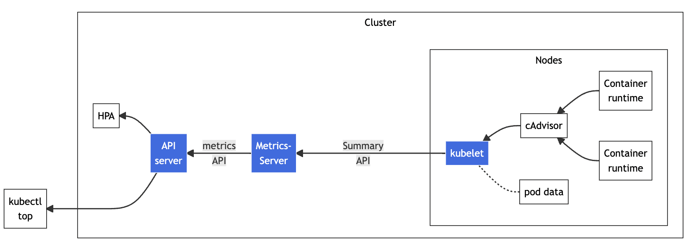
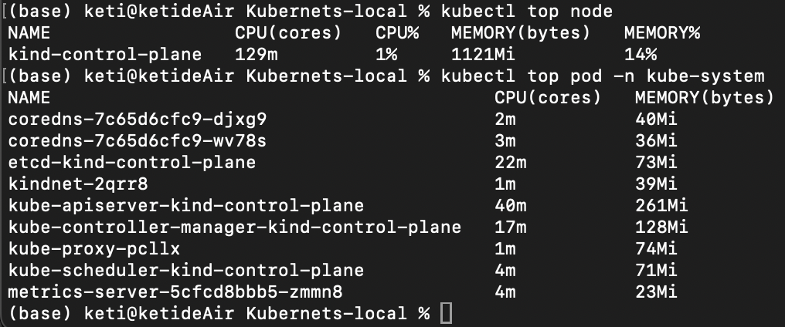

系统监控：MetricsServer
如果你对Linux系统有所了解的话，也许知道有一个命令 top 能够实时显示当前系统的CPU和内存利用率，它是性能分析和调优的基本工具，非常有用。 Kubernetes也提供了类似的命令，就是 kubectl top，不过默认情况下这个命令不会生效，必须要安装一个插件Metrics Server才可以。
Metrics Server是一个专门用来收集Kubernetes核心资源指标（metrics）的工具，它定时从所有节点的kubelet里采集信息，但是对集群的整体性能影响极小，每个节点只大约会占用1m的CPU和2MB的内存，所以性价比非常高。
下面的 这张图 来自Kubernetes官网，你可以对Metrics Server的工作方式有个大概了解：它调用kubelet的API拿到节点和Pod的指标，再把这些信息交给apiserver，这样kubectl、HPA就可以利用apiserver来读取指标了：

在Metrics Server的项目网址（ https://github.com/kubernetes-sigs/metrics-server）可以看到它的说明文档和安装步骤，不过如果你已经按照 第17讲 用kubeadm搭建了Kubernetes集群，就已经具备了全部前提条件，接下来只需要几个简单的操作就可以完成安装。
Metrics Server的所有依赖都放在了一个YAML描述文件里，你可以使用wget或者curl下载：
wget https://github.com/kubernetes-sigs/metrics-server/releases/latest/download/components.yaml
但是在 kubectl apply 创建对象之前，我们还有两个准备工作要做。
第一个工作，是修改YAML文件。你需要在Metrics Server的Deployment对象里，加上一个额外的运行参数 --kubelet-insecure-tls，也就是这样：
apiVersion: apps/v1
kind: Deployment
metadata:
name: metrics-server
namespace: kube-system
spec:
... ...
template:
spec:
containers:
- args:
- --kubelet-insecure-tls
... ...
这是因为Metrics Server默认使用TLS协议，要验证证书才能与kubelet实现安全通信，而我们的实验环境里没有这个必要，加上这个参数可以让我们的部署工作简单很多（生产环境里就要慎用）。
第二个工作，是预先下载Metrics Server的镜像。 看这个YAML文件，你会发现Metrics [Server的镜像仓库用的是gcr.io](http://xn--servergcr-by7nt8oj71ctxug31cbjeea1435k.io/)，下载很困难。好在它也有国内的镜像网站，可以下载后再改名，然后把镜像加载到集群里的节点上。
两个准备工作都完成之后，我们就可以使用YAML部署Metrics Server了：
kubectl apply -f components.yaml
Metrics Server属于名字空间“kube-system”，可以用 kubectl get pod 加上 -n 参数查看它是否正常运行：
% kubectl get pod -n kube-system
NAME READY STATUS RESTARTS AGE
coredns-7c65d6cfc9-djxg9 1/1 Running 1 (21m ago) 31m
coredns-7c65d6cfc9-wv78s 1/1 Running 1 (21m ago) 31m
etcd-kind-control-plane 1/1 Running 1 (21m ago) 31m
kindnet-2qrr8 1/1 Running 1 (21m ago) 31m
kube-apiserver-kind-control-plane 1/1 Running 1 (21m ago) 31m
kube-controller-manager-kind-control-plane 1/1 Running 1 (21m ago) 31m
kube-proxy-pcllx 1/1 Running 1 (21m ago) 31m
kube-scheduler-kind-control-plane 1/1 Running 1 (21m ago) 31m
metrics-server-5cfcd8bbb5-zmmn8 1/1 Running 0 9m33s
现在有了Metrics Server插件，我们就可以使用命令 kubectl top 来查看Kubernetes集群当前的资源状态了。它有 **两个子命令， ****node**** 查看节点的资源使用率， ****pod**** 查看Pod的资源使用率**。
由于Metrics Server收集信息需要时间，我们必须等一小会儿才能执行命令，查看集群里节点和Pod状态：
kubectl top node
kubectl top pod -n kube-system
